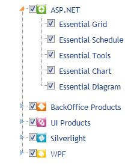

CheckBox Support for TreeView
The CheckBox support feature enables you to select multiple nodes from the TreeView and is provided next to every node.Check/Uncheck the CheckBox to select/deselect the nodes.
Use Case Scenarios
When the user checks the checkbox of the Parent node, all the child nodes of a particular parent node are automatically selected.
TreeView CheckBox Application
Using Builder
The following steps show you how to define the CheckBox in TreeView using Builder.
1. Go to View, and create an ul-li hierarchy of tree-view nodes.
Note: A ul-li heirarchy is related to unordered lists.
2. In the View, invoke the TreeView helper with the control ID as first argument, and the tree-view content ID as the second argument.
3. The use of CheckBox for Properties and Events in TreeView is shown below.
|
View[ASPX] <%=Html.Syncfusion().TreeView("MyTreeView", "treeViewContents") .ShowCheckbox(true) .CheckAll(true) .ClientSideOnChecked("ClientSideChecked") .ClientSideOnUnChecked("ClientSideUnChecked") %> |
|
View[cshtml] @{ Html.Syncfusion().TreeView("MyTreeView", "treeViewContents") .ShowCheckbox(true) .CheckAll(true) .ClientSideOnChecked("ClientSideChecked") .ClientSideOnUnChecked("ClientSideUnChecked").Render(); } |
4. In the Controller, navigate to the View page.
|
[C#] public ActionResult Index() { return View(); }
|
5. When you build and run the application, the TreeView will appear as shown below:

Figure 323: Checkbox Supported Treeview Control
Using Properties Model
The following steps describe how to define the CheckBox in TreeView, through the properties model.
1. Navigate to View, and create an ul-li hierarchy of tree-view nodes.
2. In the View, invoke the TreeView helper with the control ID as first argument and the tree-view content ID as the second argument.
|
View[ASPX] <%=Html.Syncfusion ().TreeView ("MyTreeView", "TreeView", (TreeViewModel)ViewData["TreeViewModel"])%> |
|
View[cshtml]
@(new HtmlString(Html.Syncfusion().TreeView("MyTreeView", "TreeView", (TreeViewModel)ViewData["TreeViewModel"]).ToString()))
|
3. To view using the controller, define the CheckBox’s use of the properties and events in the TreeView. This can be done through the view-specific data.
|
[C#] public ActionResult Index(string SourceType, TreeViewModel treeviewModel) { TreeViewModel treeview = new TreeViewModel(); treeview.CheckAll = true; ViewData["TreeViewModel"]=treeview; return View(); }
|
4. When you build and run the application, the TreeView will appear as shown below:
Figure 324: Checkbox support for Treeview
Properties
|
Property |
Description |
Type |
Data Type |
Reference links |
|
ShowCheckBox |
When set to true, the property displays the Checkbox for that particular node. |
Server-Side |
Boolean |
NA |
|
CheckAll |
When it is true, this property checks all the node checkboxes, and when it is false, it unchecks all the node checkboxes. |
Server-Side |
Boolean |
NA |
Methods
|
Method |
Description |
Parameters |
Type |
Return Type |
Reference links |
|
CheckAll |
Checks all the node checkboxes |
Not Available |
Client-side |
Void |
NA |
|
UnCheckAll |
UnChecks all the node checkboxes |
Not Available |
Client-side |
Void |
NA |
|
CheckAt |
Checks the node of the specified ID. |
ID |
Client-side |
NA |
NA |
|
UnCheckAt |
UnChecks the node of the specified ID. |
ID |
Client-side |
NA |
NA |
Events
|
Event |
Description |
Arguments |
Type |
Reference links |
|
ClientSideOnChecked |
This event is raised when you check the checkbox of any node.(Every node has a checkbox) |
args |
Client-side |
NA |
|
ClientSideOnUnChecked |
This event is raised when you uncheck the checkbox of any node. |
args |
Client-side |
NA |
Sample Link
To view the samples,
1. Open the Grid sample browser from the dashboard. (Refer to the Samples and Location chapter)
2. Navigate to Tools.MVC -> TreeView